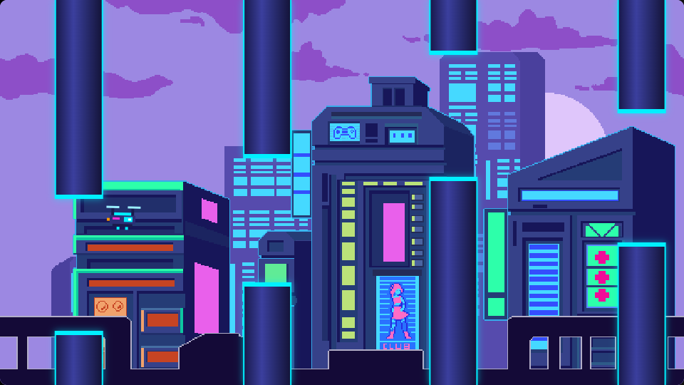
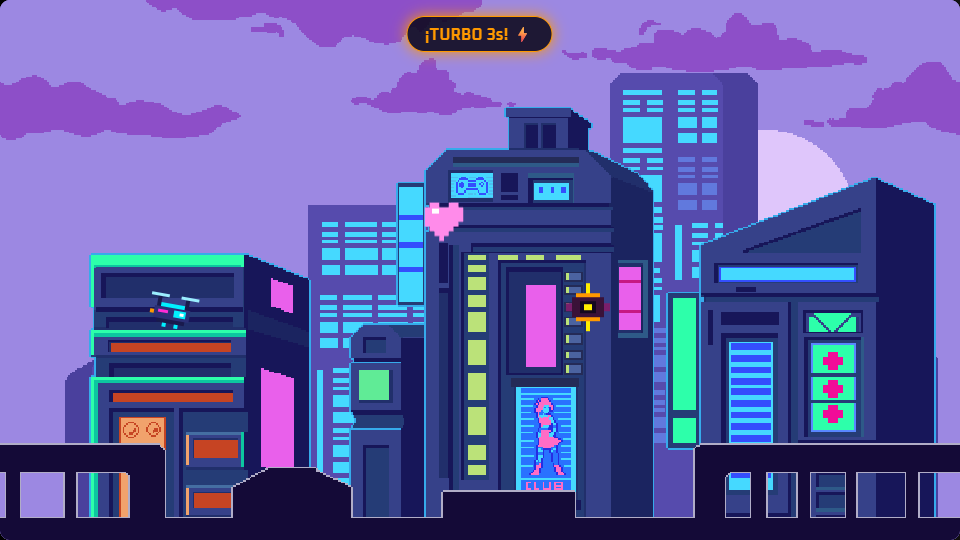
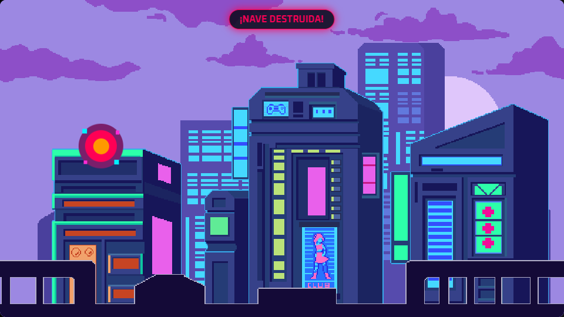

Vidas❤️❤️❤️
Puntaje0
Mejor0
EstadoNormal
Imágenes del juego:



Neon Drift
Neon Drift es un videojuego de avance horizontal ambientado en una ciudad cyberpunk. Controlás un dron de reparto que cruza la ciudad a velocidad constante mientras la gravedad lo empuja hacia abajo. Tenés que elevarlo en el momento justo para atravesar los huecos entre las torres de energía. La separación entre torres y la altura de cada hueco cambian todo el tiempo, y los huecos se van cerrando a medida que avanza la partida.
¿Cómo Jugar?
- Presioná Espacio, W, Flecha arriba o hacé clic sobre el escenario para comenzar y para dar cada impulso.
- Pasá entre las torres: cada torre superada suma 1 punto.
- Empezás con 3 vidas. Chocar con una torre o con el piso resta una y te da un instante de invulnerabilidad.
- Corazón: recupera una vida. Si ya tenés las 3, suma 5 puntos.
- Dron de energía: activa 3 segundos de turbo, con más velocidad y más riesgo. No termina la partida.
- La partida termina al perder las 3 vidas. ¡Superá tu mejor puntaje!